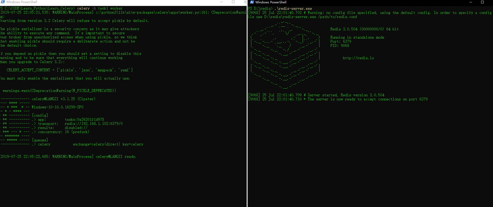
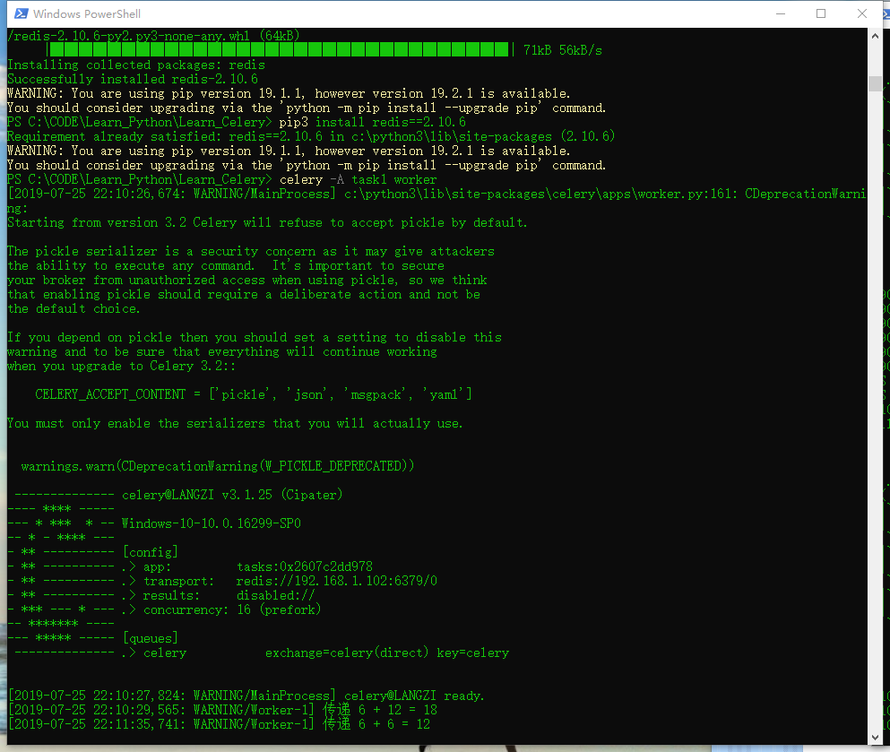

celery基本原理
1、客户端也就是python（django/flask等）发布任务
2、发布的任务存到任务队列里面，可以以redis、rabbitMQ、MessageQueue、MySQL存储，一般在django/flask程序里redis居多
3、任务处理者会不断从任务队列里面获取任务执行
Celery设计
celery由五大模块实现。
Task
就是任务，有异步任务和定时任务。
Broker
中间人，接收生产者发来的消息即Task，将任务存入队列。任务的消费者是Worker。Celery本身不提供队列服务，推荐用Redis或RabbitMQ实现队列服务。
Worker
执行任务的单元，它实时监控消息队列，如果有任务就获取任务并执行它。
Beat
定时任务调度器，根据配置定时将任务发送给Broler。
Backend
用于存储任务的执行结果。

Celery安装配置
Celery 4.0+及以后版本不支持在windows系统上运行。如果你希望在windows系统上使用celery, 有两种方法。
1.安装3.1.25版本
1
| pip install celery==3.1.25
|
2.安装gevent
1
2
3
| pip install gevent
# 启动worker
celery -A worker -l info -P gevent
|
简单案例
首先编写一个文件 命名为task1.py
1
2
3
4
5
6
7
| from celery import Celery
app = Celery('tasks',broker='redis://192.168.1.102:6379/0')
@app.task
def add(x,y):
print('传递 {} + {} = {}'.format(x,y,x+y))
return x+y
|
然后启动redis数据库
接下来再task1文件夹执行命令
1
| celery -A task1 worker --loglevel=info
|
就会看到消息队列都启动

到现在所有的队列都启动，可以向这个队列添加任务等待处理
方法是再task1目录下打开cmd窗口，进入python交互界面
1
2
3
| from task1 import add
add.delay(6,12)
add.delay(6,6)
|

保存结果
上面只是一个发送任务的调用，结果是拿不到的。上面也没有接收返回值，这次把返回值保存到起来
修改task1内容
1
| app = Celery('tasks',broker='redis://192.168.1.102:6379/0',backend='redis://192.168.1.102:6379/0')
|
然后要重启Worker，IDLE也要重启
然后这样就能获取结果了
1
2
3
4
5
6
7
8
9
10
| t = add.delay(1, 1)
t.get()
|
在项目中使用celery
可以把celery配置成一个应用，假设应用名字是CeleryPro，目录格式如下：
CeleryPro
├─__init.py
├─celery.py
├─tasks.py
这里的连接文件命名必须为celery.py，其他名字随意
celery文件
这个文件名必须是celery.py：
1
2
3
4
5
6
7
8
9
10
11
12
13
| from __future__ import absolute_import, unicode_literals
from celery import Celery
app = Celery('CeleryPro',
broker='redis://192.168.1.102:6379',
backend='redis://192.168.1.102:6379',
include=['CeleryPro.tasks'])
app.conf.update(
result_expires=3600,
)
if __name__ == '__main__':
app.start()
|
tasks文件
这个文件开始两行就多了一个点，这里要导入上面的celery.py文件。后面只要写各种任务加上装饰器就可以了：
1
2
3
4
5
6
7
8
9
10
11
12
13
14
15
| from __future__ import absolute_import, unicode_literals
from .celery import app
import time
@app.task
def add(x, y):
print("计算2个值的和: %s %s" % (x, y))
return x+y
@app.task
def upper(v):
for i in range(10):
time.sleep(1)
print(i)
return v.upper()
|
启动worker
这里注意用的都是CeleryPro：
1
2
3
| celery -A CeleryPro worker -loglevel=info # 前台启动不推荐
celery -A CeleryPro worker -l info # 前台启动简写
celery multi start w1 -A CeleryPro -l info # 推荐用后台启动
|
定时任务
主要修改 celery.py文件
1
2
3
4
5
6
7
8
9
10
11
12
13
14
15
16
17
18
19
20
21
22
23
24
25
26
27
28
29
30
31
32
33
34
35
| from __future__ import absolute_import, unicode_literals
from celery import Celery
from celery.schedules import crontab
from datetime import timedelta
app = Celery('CeleryPro',
broker='redis://192.168.1.102',
backend='redis://192.168.1.102',
include=['CeleryPro.tasks'])
app.conf.CELERYBEAT_SCHEDULE = {
'add every 10 seconds': {
'task': 'CeleryPro.tasks.add',
'schedule': timedelta(seconds=10),
'args': (1, 2)
},
'upper every 2 minutes': {
'task': 'CeleryPro.tasks.upper',
'schedule': crontab(minute='*/2'),
'args': ('abc', ),
},
}
app.conf.CELERY_TIMEZONE = 'Asia/Shanghai'
app.conf.update(
CELERY_TASK_RESULT_EXPIRES=3600,
)
if __name__ == '__main__':
app.start()
|
启动使用命令
1
2
| celery -A CeleryPro beat -l info
celery -A CeleryPro worker -l info
|
新例子
1
2
3
4
5
6
7
8
9
10
11
|
from celery import Celery,platforms
app = Celery('tasks')
app.config_from_object('config')
platforms.C_FORCE_ROOT = True
@app.task
def add(x,y):
return x + y
|
和另一个文件
1
2
3
4
5
6
7
8
9
10
11
12
13
14
15
16
17
|
from __future__ import absolute_import
from celery.schedules import crontab
from datetime import timedelta
BROKER_URL = 'redis://127.0.0.1:6379/0'
CELERYBEAT_SCHEDULE = {
'add-every-2-seconds': {
'task': 'tasks.add',
'schedule': timedelta(seconds=2),
'args': (16, 10),
},
}
CELERY_TIMEZONE = 'Asia/Shanghai'
|
然后打开三个cmd窗口，依次输入：
1
2
3
| celery -A tasks beat -l info
celery -A tasks worker -l info
celery -A tasks flower
|
然后访问本地5555端口即可~
查看异步任务情况
Celery提供了一个工具flower，将各个任务的执行情况、各个worker的健康状态进行监控并以可视化的方式展现
安装flower:
启动flower（默认会启动一个webserver，端口为5555）
在另一个Terminal中：
这里的task1是上面创建的py文件
进入
查看


{kind=link}
{kind=link}